Bicampeã mundial
Redefinindo limites, brigando por notas, dando tudo em cada onda. Construindo um legado no surfe dentro e fora d'água.
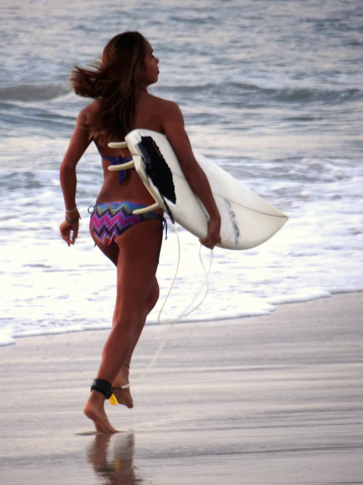
Não importa de onde você sai. Importa como você rema de volta.
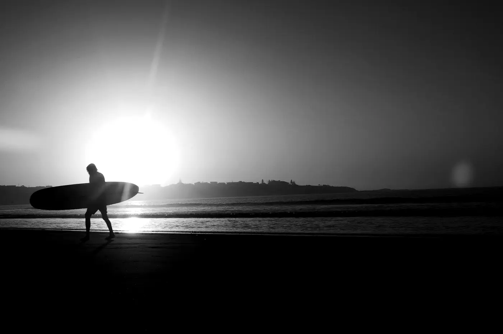


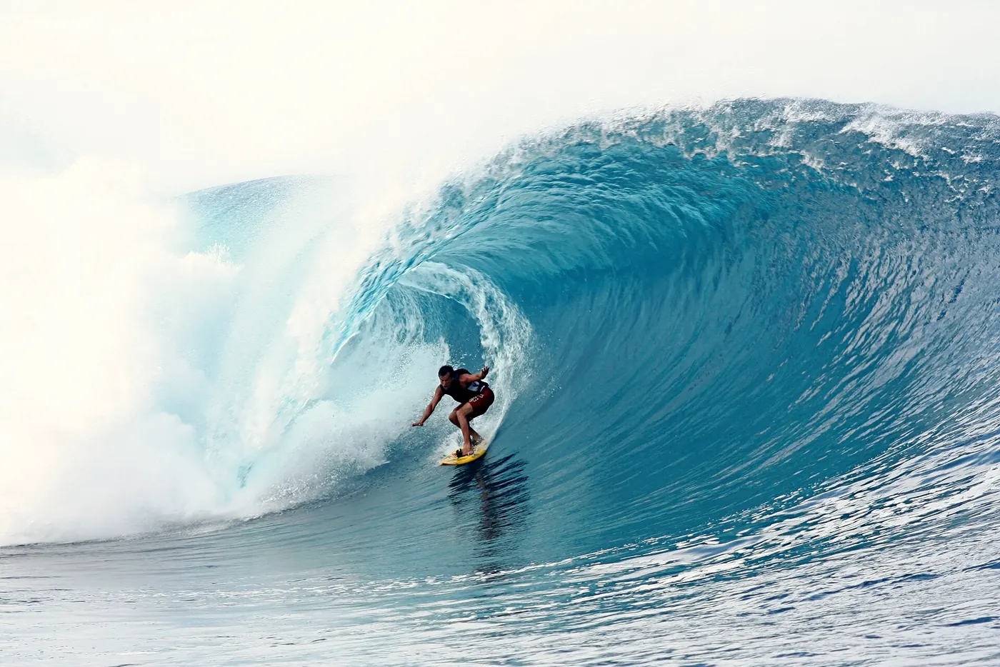


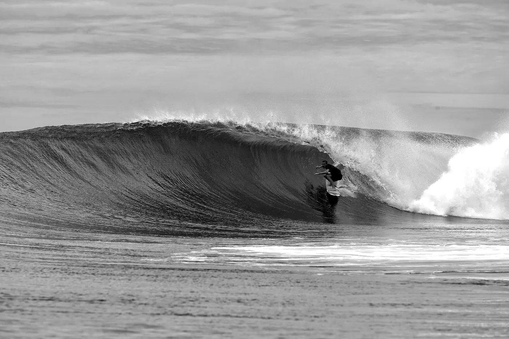

Comecei com 7 anos numa prancha emprestada. Desde então, remo todo dia para transformar esse sonho em rotina.
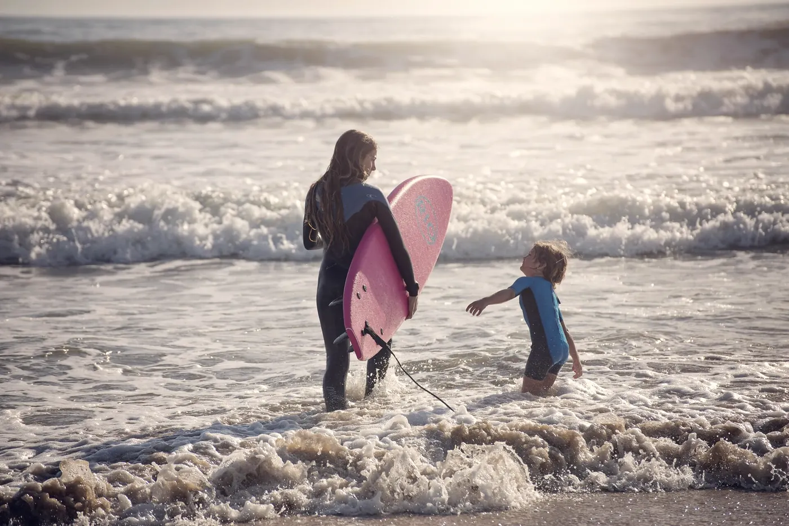


PRANCHAS
HALL DA FAMA
Da prancha emprestada da estreia às pinturas feitas para cada etapa, a Tainá sempre fez das pranchas uma parte da sua história.
Coral2026

Maré Baixa2025

Saquarema2025
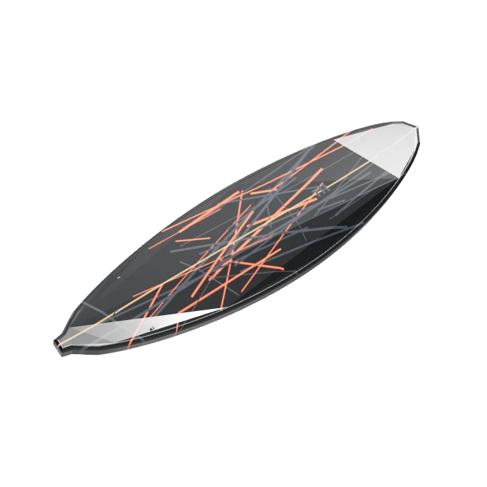
Noturna2024
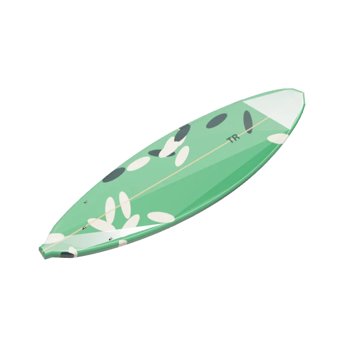
Itacaré2024

Areia2023

Título2023
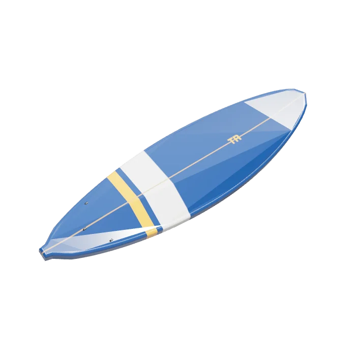
Abrolhos2022
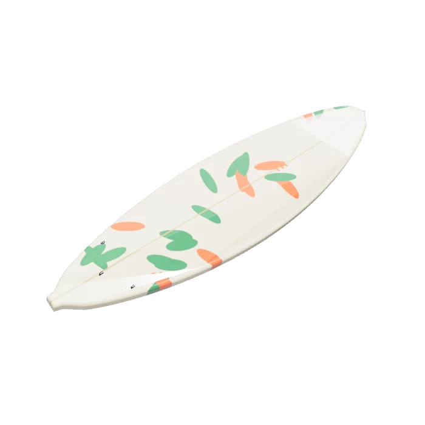
Coqueiral2022
Estreia2021
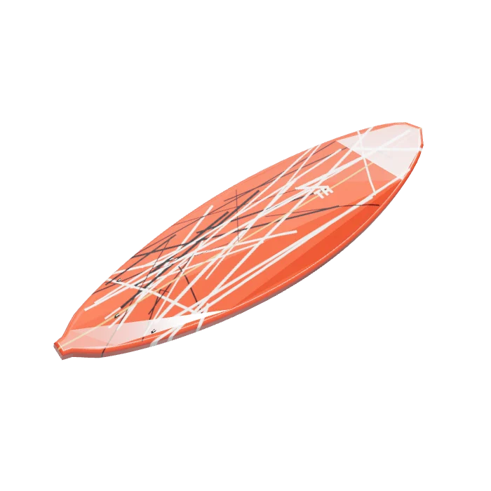
Vermelha2020
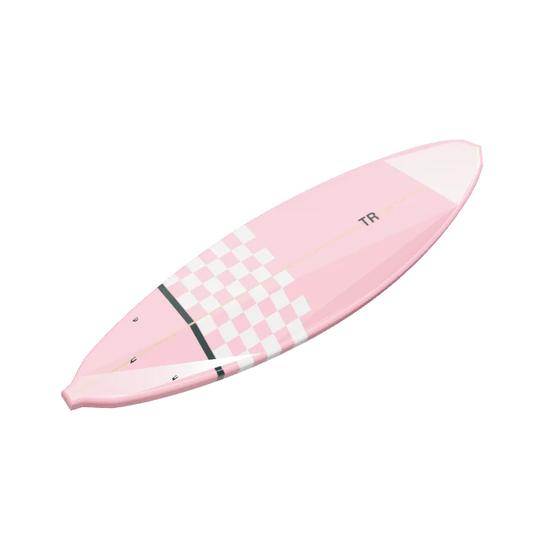
Primeira2019
Mais pranchas e os melhores momentos
da Tainá dentro d'água
LOJA TAINÁ
CAMPEÃ
DO MUNDO
BICAMPEÃ
Celebre esse momento com uma coleção feita para quem nunca parou de remar. Vista, guarde, lembre para sempre.
VISITAR A LOJA
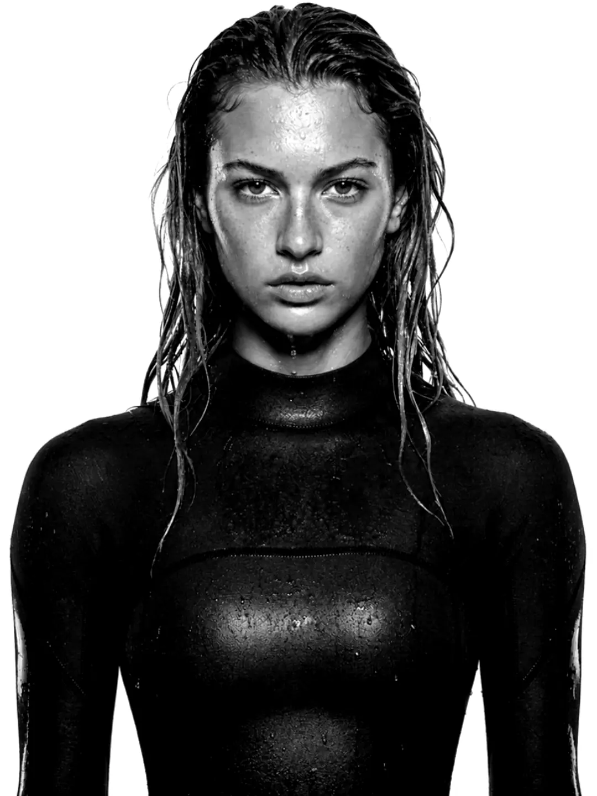
PARCEIROS
&CAMPANHAS
A Tainá trabalha com marcas que dividem a paixão pelo mar, em campanhas dentro e fora d'água.
- QUILHA
- maré alta
- SALINA
- Vento Sul
- ATOL
- parafina co.
- ONDULA
- QUILHA
- maré alta
- SALINA
- Vento Sul
- ATOL
O QUE ROLANAS REDES


Siga: a Tainá nas redes